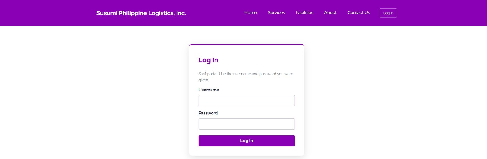
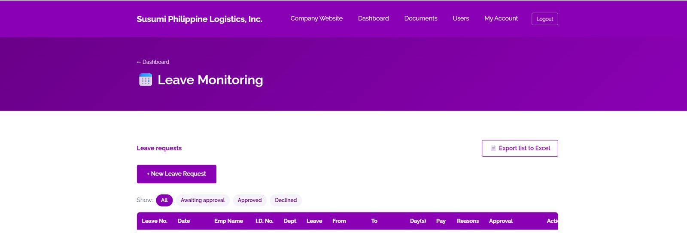
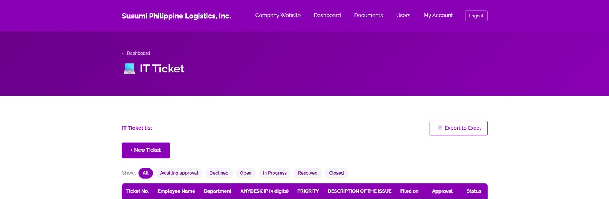
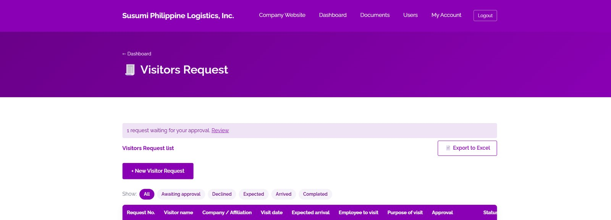
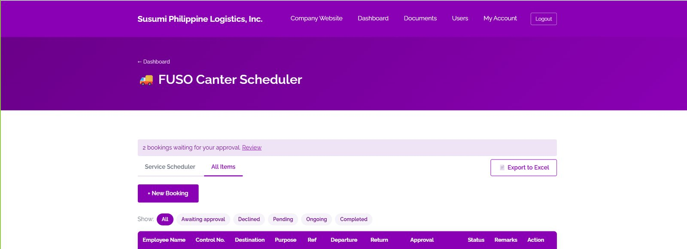
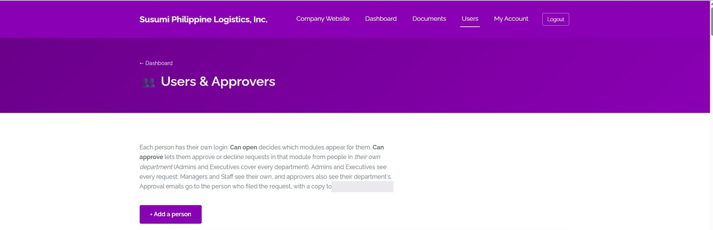
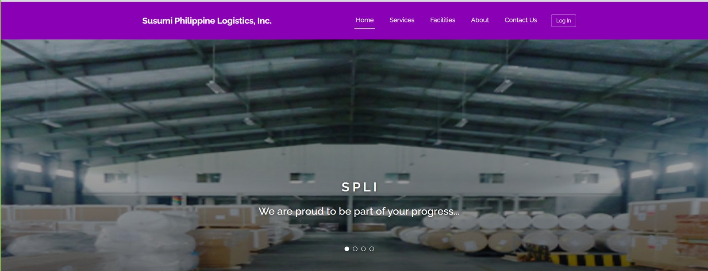

Flagship project
SPLI Portal
One place for leave requests, approvals, IT tickets, visitor requests and vehicle scheduling at Susumi Philippine Logistics, Inc. Designed, built, deployed and maintained by me.
This system is actively used in a production environment. Certain features may require authorized access.

Overview
The SPLI Portal is the internal web system for Susumi Philippine Logistics. Employees sign in to one dashboard and open the module they need: leave requests, IT tickets, visitor requests, the FUSO Canter scheduler, documents and company email.
I handled the full lifecycle: requirements, system design, UI/UX, database design, development, testing, deployment and ongoing improvements from user feedback.
The problem
Requests ran on email, paper forms and chat messages. Leave was processed manually, approvals needed constant follow-up, services were scattered across separate systems, and nobody could easily see where a request stood.
The solution
A single, centralized portal with a login, a dashboard of modules, and a consistent request-and-approval flow across all of them. Each module follows the same pattern, so employees learn it once: file a request, track its status, and get an approval decision.
- Leave management with request, approval and history tracking
- IT Ticket submission and status monitoring
- Visitors Request registration and approval
- FUSO Canter Scheduler for vehicle booking with approval
- Users and Approvers to control who can open and approve what
- Documents and Microsoft 365 webmail reachable from the same dashboard
Screenshots







Screenshots show the interface only, with no employee records or approval data.
Design decisions
- Module cards on a single dashboard. Staff see only the modules they are allowed to open, so the interface stays simple.
- One request pattern everywhere. Filter tabs, a status column and a New button behave the same in every module, which lowers the learning curve.
- Role-aware approvals. Each person has their own login, with separate permissions to open a module and to approve requests in it.
- Export to Excel on request lists, because HR and admin already work in spreadsheets.
- Responsive layout so the portal works on desktops and phones.
Challenges solved
- Role-based access. Admins and executives see every department, while managers and staff see their own.
- Structured approvals. Requests move through clear statuses so nothing waits unseen, and approval emails go to the right person.
- Adoption. The interface follows workflows people already knew, which made the switch from paper and chat easy.
- Reliable hosting. Deployed online and tested across devices and real users.
Impact
The portal is live and used by 16 active people across teams. Requests are processed faster, services are centralized, paperwork is reduced, and every request has a visible status and a record.
Key achievements
- Took a system from idea to production use as the sole developer
- Replaced manual email and paper approvals with tracked workflows
- Delivered four working request modules plus user and approver management
- Improved the system continuously from real user feedback
Where it goes next
Planned improvements include analytics and reporting, more self-service modules, better notifications, document management and workflow automation.